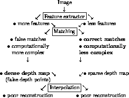

Vision comes to human so naturally that one does not realize its complexity until one tries to automate it. The basic aim of stereo vision is to extract disparity map or equivalently the depth map (provided the camera geometry is known) of the scene from its two dimensional representation [1]. Obtaining depth information from the 2D stereo images is an inverse optics problem and hence ill-posed in the sense of Hadamard [2]. Regularization in the sense of Tikhonov is a commonly used technique in computer vision problems to make an ill-posed problem well-posed. The basic philosophy of this technique is to restrict the solution space by imposing some constraints. Uniqueness, smoothness, epipolar geometry, disparity gradient, are some of the physical constraints that are imposed on the stereo problem to restrict the solution space and hence make the problem well-posed.
Numerous techniques have been developed to infer depth ([6] -[14] to cite a few). Various shape from X techniques get the depth information by using only a single 2D image, but they make use of a number of assumptions like distant light sources, spherical patches, knowledge of the reflectance map, etc. In addition, the depth information obtained is relative and not absolute. Binocular stereo techniques use two 2D images (of the same scene) to extract depth which is absolute.
Though there exists a large number of stereo vision algorithms, most of them can be categorized as having three main modules built into their structure. They are
A number of physical constraints are imposed in the development of most algorithms. Also, in most of the algorithms the three blocks are traversed in a top to bottom fashion without any interaction between the modules. Initially a feature extracting algorithm is used to obtain salient features in both the left and the right image of the stereo pair. In the second stage, a matching algorithm is used to match the feature points in the left and the right image. Once the feature points are matched, the difference between the position of the feature point in the left image and the corresponding matched point in the right image gives the disparity map. Knowing the geometry of the camera, the depth information can be calculated from the disparity map in a simple way. Next an interpolation algorithm is used to interpolate on the sparse depth data, to obtain a dense depth map (in our simulations we interpolate on the disparity data rather than the depth data since the camera geometry is usually not known).

Figure 1: Procedure involved in a typical Stereo Vision Algorithm
The problem emanating from large and small number of feature points is pictorially depicted in Figure 1. One would like to have a large number of correct matches, leading to a dense disparity map and consequently to a good reconstruction. But, the dense depth map and correct matches are conflicting (notice that they appear on different sides of the matching block in Figure 1); one alternative is to use an integration approach. Integration is a process where information obtained from one module drives another module with an aim to improve the final solution. A number of algorithms appear in the vision literature which use integration in one form or another (for example [3], [4], [5], [15], [16], [17], [24]).
Perhaps one could view the early work of Moravec [18], as an approach to integrating information from several images of the same scene from different views. More recently Markov Random Field (MRF) framework has been exploited to integrate information from multiple cues like motion, color, texture [3]. Another approach integrates the stereo pair of images at different scales, the information available at the coarser pairs is used to aid the images at finer scales [16]. Integration of stereo images at various baselines has been worked out in [15].
In this paper, motivated by the work of Gamble et al [3], Clark and Yullie [24], Toborg and Hwang [4] and Banard [16] we present a novel approach to integrate various modules associated with stereo. In our approach there is integration among the following blocks: right and left edge extracting modules, the matching module, and the interpolator module (see Figure 2). We also incorporate line fields to preserve discontinuities in the reconstructed surface. Moreover, the interaction between modules is through these line fields. Our integration approach results in a disparity map which is dense. The computation of dense disparity map from two 2D stereo images is computationally expensive.
To overcome the problem of high computational time we have exploited the multiresolution approach of Burt and Adelson [23] in our integration model. We would like to remark that the multiresolution approach of [23] is used very extensively in the computer vision literature (for example [5], [16], [21], [22],[25]). As shown in Section 6 the multiresolution approach to integrated stereo is at least seven and a half times faster than the one without multiresolution. Besides faster computation, our simulation studies illustrate that a more accurate disparity map is obtained by exploiting multiresolution (see Section 7). As explained in Section 6 and 7, this is because, in the multiresolution approach, we have a better disparity initialization for the disparity computation at the highest resolution as compared to zero initialization when one works on the single finest resolution.